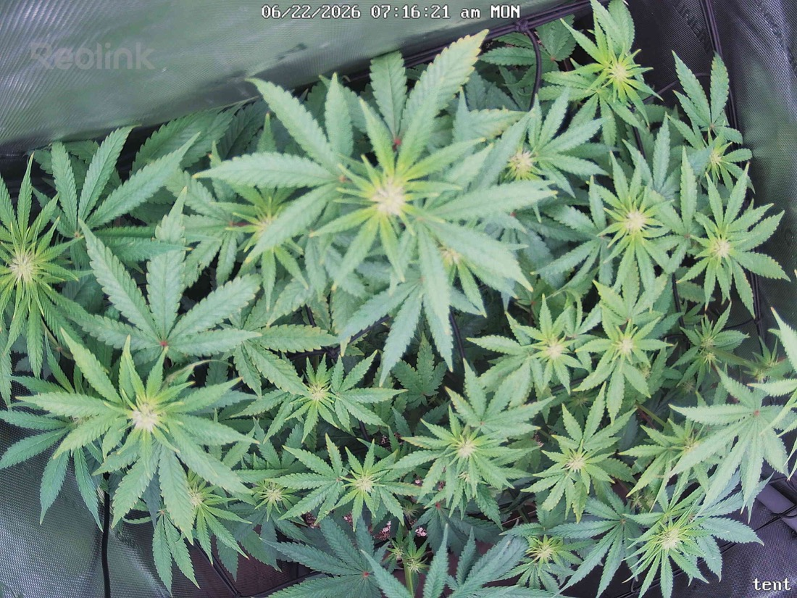

← All reports
Jun 22, 2026
Mon Jun 22, 2026 — 7:16 AM

Prognosis
Day 19 of flower (flipped 6/3) — papaya crush, scrog filling in.
- What changed: Canopy is noticeably more filled and even vs yesterday. Top colas (center and upper-right) are stacking — you can see developing flower clusters with white pistils emerging at the apex sites. Slight upward reach on the new growth tips, posture is upright and confident, no overnight droop.
- Color: Uniform medium-to-deep green across the canopy. No yellowing, no interveinal chlorosis, no edge/tip burn. Newest growth is a healthy lighter green at the tips — normal for actively stretching flower.
- Light: No tacoing, no bleaching on the top colas despite the recent 700+ PPFD center reading. Your one-notch reduction after spotting ~1100 on the top cola looks correct — tops are flat and healthy, not stressed. Good call.
- Pests: No stippling, webbing, or visible mites in either frame. Consistent with your last several clean inspections — the Green Cleaner rotation (last applied 6/19) appears to be holding the spider mites in check.
- Water/soil: No clawing or wilt; leaves are turgid. You're ~2 days out from the 6/20 1gal top + 1gal bottom watering — moisture looks fine, no need to water yet.
- Structure: Scrog is doing its job — even, horizontal canopy with multiple competing tops rather than one dominant cola. Lots of bud sites being set up at the screen.
- Phase check: Right on track. ~19 days into 12/12, early-to-mid stretch with pistil formation showing — exactly where a healthy photoperiod should be. Stretch should taper over the next 1–2 weeks as bud structure takes over.
Suggested next action: No action needed today. Keep the current light level for now and let the tops finish stretching before any further PPFD bump; continue the Green Cleaner cadence and watch the new top-dress for any feeding response over the next few days.
Overall: Healthy, vigorous, pest-free and developing exactly on schedule for early flower — clean bill of health.